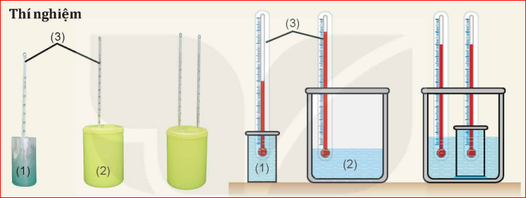
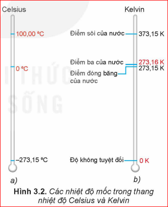
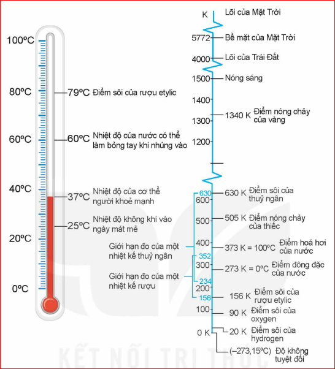

Làm thế nào để nhận biết được sự truyền nhiệt năng giữa các vật? Ví dụ, làm thế nào để nhận biết: “Vật nào là vật truyền nhiệt năng, vật nào là vật nhận nhiệt năng; sự truyền nhiệt năng đã dừng lại hay còn đang tiếp tục;...?"
Thí nghiệm sau đây sẽ giúp chúng ta hiểu được ý nghĩa của khái niệm nhiệt độ, nhận biết được khi nào có hoặc không có quá trình truyền nhiệt năng và chiều truyền nhiệt năng giữa hai vật tiếp xúc nhau.
Chuẩn bị:
Tiến hành:
Đặt cốc nhôm vào trong lòng bình cách nhiệt sao cho nước trong bình cách nhiệt ngập một phần cốc nhôm (Hình 3.1). Quan sát sự thay đổi nhiệt độ của nước trong bình và trong cốc từ khi bắt đầu thí nghiệm tới khi hai nhiệt độ này bằng nhau.

Hình 3.1. Thí nghiệm sự truyền nhiệt năng1. Tại sao có thể biết nước trong bình truyền nhiệt năng cho nước trong cốc?
2. Làm thế nào để nhận biết quá trình truyền nhiệt năng giữa nước trong bình và nước trong cốc đã kết thúc?
Nhiệt độ cho biết trạng thái cân bằng nhiệt của các vật tiếp xúc nhau và chiều truyền nhiệt năng:
? Có thể nói khi hai vật tiếp xúc với nhau thì nhiệt năng luôn tự truyền từ vật có nội năng lớn hơn sang vật có nội năng nhỏ hơn hay không? Tại sao? Tìm ví dụ minh hoạ.
Không thể nói như vậy. Vì sự truyền nhiệt năng giữa hai vật tiếp xúc nhau phụ thuộc vào nhiệt độ của hai vật chứ không phụ thuộc vào nội năng của chúng.
Ví dụ: Nhả một giọt nước sôi (\(100^\circ\text{C}\)) vào một bể nước lạnh lớn (\(20^\circ\text{C}\)). Mặc dù bể nước có nội năng lớn hơn rất nhiều so với giọt nước sôi, nhưng nhiệt năng vẫn truyền từ giọt nước sôi (nhiệt độ cao hơn) sang bể nước lạnh (nhiệt độ thấp hơn).
Hai nhiệt độ dùng làm mốc của thang này là nhiệt độ đóng băng (\(0^\circ\text{C}\)) và nhiệt độ sôi (\(100^\circ\text{C}\)) của nước tinh khiết ở áp suất tiêu chuẩn. Khoảng cách giữa hai mốc này được chia thành 100 phần bằng nhau, mỗi phần là \(1^\circ\text{C}\).
Kí hiệu nhiệt độ: \(t\), đơn vị: \(^0 C\).
Năm 1848, William Thomson (Nam tước Kelvin) đề xuất thang nhiệt độ tuyệt đối. Hai nhiệt độ làm mốc:

Hình 3.2. Các nhiệt độ mốc trong thang Celsius và Kelvin\(T(K) = t^0 C + 273,15\) \(\xrightleftharpoons{}\) \(t^0 C = T(K) - 273,15\)
Thường làm tròn trong tính toán:
\(T(K) = t^0 C + 273\) hoặc \(t^0 C = T(K) - 273\)

Hình 3.3. Nhiệt độ của một số sự vật, hiện tượng, quá trình? 1. Nhiệt độ không tuyệt đối là nhiệt độ nào trong hai thang nhiệt độ Celsius và Kelvin?
? 2. Nêu ý nghĩa của nhiệt độ không tuyệt đối.
? 3. Chứng minh rằng mỗi độ chia (\(1^\circ\text{C}\)) trong thang Celsius có độ lớn bằng 1 độ chia (\(1\text{ K}\)) trong thang Kelvin.
? 4. Chuyển đổi nhiệt độ:
a) Từ Celsius sang Kelvin: \(270^\circ\text{C}\); \(-270^\circ\text{C}\); \(500^\circ\text{C}\).
b) Từ Kelvin sang Celsius: \(0\text{ K}\); \(500\text{ K}\); \(1000\text{ K}\).
a) Chuyển sang Kelvin (\(T = t + 273\)):
• \(270^\circ\text{C} = 270 + 273 = 543\text{ K}\)
• \(-270^\circ\text{C} = -270 + 273 = 3\text{ K}\)
• \(500^\circ\text{C} = 500 + 273 = 773\text{ K}\)
b) Chuyển sang Celsius (\(t = T - 273\)):
• \(0\text{ K} = 0 - 273 = -273^\circ\text{C}\)
• \(500\text{ K} = 500 - 273 = 227^\circ\text{C}\)
• \(1000\text{ K} = 1000 - 273 = 727^\circ\text{C}\)
? 5. Một vật được làm lạnh từ \(100^\circ\text{C}\) xuống \(0^\circ\text{C}\). Hỏi nhiệt độ của vật theo thang Kelvin giảm đi bao nhiêu độ?
Nhiệt kế là thiết bị dùng để đo nhiệt độ. Nhiệt kế được chế tạo dựa trên một số tính chất vật lí phụ thuộc vào nhiệt độ của các chất, các vật liệu, các linh kiện điện và điện tử,...
Tính chất phổ biến nhất là sự nở vì nhiệt của chất lỏng (rượu, thủy ngân, dầu), chất rắn (thanh kim loại), hoặc chất khí.
1. Thang Fahrenheit (\(^0 F\): Nước đá tan là \(32^0 F\), nước sôi là \(212^0 F\). Công thức: \(t^0 F = 32 + 1,8t t^0 C \).
2. Trong nhiệt động lực học, nhiệt độ là đại lượng đặc trưng cho động năng trung bình của chuyển động nhiệt của các phân tử. Động năng trung bình càng lớn thì nhiệt độ càng cao.
Các tính chất vật lí khác được ứng dụng chế tạo nhiệt kế:
Trả lời 10 câu hỏi để chinh phục đỉnh cao tri thức Vật Lí Nhiệt!
Câu 1 (Mức 1): Khi hai vật tiếp xúc nhau, nhiệt năng truyền từ vật nào sang vật nào?
Câu 2 (Mức 1): Đơn vị đo nhiệt độ trong hệ SI và thang nhiệt độ tuyệt đối là gì?
Câu 3 (Mức 1): Độ không tuyệt đối tương ứng với bao nhiêu °C?
Câu 4 (Mức 1): Khi hai vật ở trạng thái cân bằng nhiệt thì:
Câu 5 (Mức 2): Nhiệt độ của cơ thể người khỏe mạnh khoảng \(37^\circ\text{C}\). Trong thang Kelvin tương ứng là bao nhiêu K?
Câu 6 (Mức 2): Điểm đóng băng và điểm sôi của nước tinh khiết ở áp suất tiêu chuẩn trong thang Kelvin lần lượt là:
Câu 7 (Mức 2): Nhiệt kế thường dùng đo nhiệt độ cơ thể dựa trên nguyên lý hoạt động nào?
Câu 8 (Mức 3): Nếu một vật tăng nhiệt độ thêm \(25^\circ\text{C}\) thì nhiệt độ của vật đó theo thang Kelvin sẽ tăng thêm bao nhiêu Kelvin?
Câu 9 (Mức 3): Ở nhiệt độ không tuyệt đối, phát biểu nào sau đây là ĐÚNG?
Câu 10 (Mức 3): Nhiệt độ của một ngọn lửa ghi nhận được là \(1273\text{ K}\). Theo thang Celsius, ngọn lửa này có nhiệt độ là bao nhiêu?
Bài 1: Nhiệt độ không khí trung bình ở Hà Nội vào một ngày mùa hè là \(32^\circ\text{C}\). Hãy tính giá trị nhiệt độ này theo thang Kelvin và Fahrenheit.
Lời giải chi tiết:
• Trong thang Kelvin: \(T = t + 273 = 32 + 273 = 305\text{ K}\) (hoặc chính xác hơn \(305,15\text{ K}\)).
• Trong thang Fahrenheit: \(t^0 F = 32 + 1,8 \times t^0 C = 32 + 1,8 \cdot 32 = 32 + 57,6 = 89,6^0 F\).
Bài 2: Một vật thể được đun nóng làm nhiệt độ tăng từ \(20^0 C\) lên \(80^0 C\). Hỏi độ biến thiên nhiệt độ của vật theo thang Kelvin (\(\Delta T\)) bằng bao nhiêu?
Lời giải chi tiết:
Nhiệt độ ban đầu theo thang Kelvin: \(T_1 = 20 + 273 = 293\text{ K}\).
Nhiệt độ sau khi đun nóng: \(T_2 = 80 + 273 = 353\text{ K}\).
Độ biến thiên nhiệt độ theo thang Kelvin: \(\Delta T = T_2 - T_1 = 353 - 293 = 60\text{ K}\).
Nhận xét: \(\Delta T(K) = \Delta t^0 C = 80 - 20 = 60 K\).
Bài 3: Ở nhiệt độ bao nhiêu thì số chỉ trên thang Fahrenheit gấp 2 lần số chỉ trên thang Celsius?
Lời giải chi tiết:
Theo đề bài ta có: \(t_F = 2 \cdot t_C\).
Áp dụng công thức chuyển đổi: \(t_F = 32 + 1,8 \cdot t_C\).
Thay \(t_F = 2 \cdot t_C\) vào phương trình trên:
\(2 \cdot t_C = 32 + 1,8 \cdot t_C\)
\(\Rightarrow 0,2 \times t_C = 32 \Rightarrow t_C = \frac{32}{0,2} = 160^0 C\)
Vậy ở nhiệt độ \(160^0 C\) (tương ứng \(320^0 F\)) thì số chỉ Fahrenheit gấp 2 lần số chỉ Celsius.